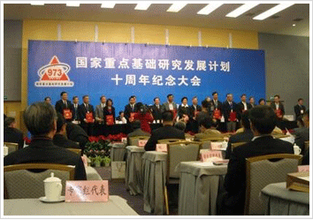

以政府为主导973计划即国家高技术研究发展计划中的基因项目的科研成果。主要依据是人体免疫中的主动免疫法，该疗法不采用灼烧、冷冻激光等传统手段，运用先进的免疫应答技术，只需几天即大幅度提高人体对病毒的应答免疫能力。是目前临床治疗性病最有效疗法之一。
由人乳头瘤病毒（HPV）感染所致的以肛门生殖器部位增生性损害为主要表现，分为16\18\6\11型,其中6\11属于低危型，16\18属于高危型号。
由单纯疱疹病毒（HSV）引起的性传播疾病，主要是HSV-2型，少数为HSV-1型。常见的性病之一。生殖器疱疹可反复发作，对病人的健康和心理影响较大。
由苍白（梅毒）螺旋体引起的慢性、系统性性传播疾病。临床上可表现为一期梅毒、二期梅毒、三期梅毒、潜伏梅毒和先天梅毒（胎传梅毒）等。
淋病奈瑟菌（简称淋球菌）引起的以泌尿生殖系统化脓性感染，淋球菌为革兰阴性双球菌，离开人体不易生存，多发生于性活跃的青年男女。
由杜克雷嗜血杆菌感染引起，主要发生于生殖器部位多个痛性溃疡，多伴有腹股沟淋巴结化脓性病变的一种性传播疾病。本病由性交传染，临床上男性多于女性患者，在我国比较少见
又名第四性病，是经典的性病之一，其病原体是沙眼衣原体，主要通过性接触传播。其主要临床表现为生殖器部位出现一过性水疱性损害，局部淋巴结肿大，未经治疗晚期可发生象皮肿和直肠狭窄，对组织的破坏性强。
经检验室识别病毒、生物减毒、灭活、提纯等一系列步骤处理后的细胞，将为人体激发机体免疫反应，并具靶向性精准攻击病毒细胞。促使机体产生特异抗体或是特异性免疫应答。
因此技术是利用患者自身活性免疫细胞，直接摧毁病毒核心DNA，并让人体自身提高对靶向病毒的免疫力，治疗彻底干脆。
无需冷冻、灼烧大面积激光照射，只在取病变部位皮瓣组织产生1-2mm微创切口，段时间内即可愈合不留疤痕。
自体细胞净化治疗产生的免疫抗体具有记忆功能,对病毒的特异免疫杀伤功能长期在患者自身体内可防止复发。
中华性学学会会员
中国泌尿专业委员会全国委员
性传播疾病专业委员会主任委员
上海城市医院性病诊疗中心首席专家，从事性传播疾病临床工作二十余年，具有丰富的疾病诊断及治疗经验。在自体细胞回输治疗性病领域，拥有极高造诣，成功帮助上网例疾病患者告别疾病烦恼，受到患者一直信赖及肯定。核心来自德国制造的半导体激光发生器长；精密的光学传输系统，耦合效率高，传输损耗少。与光敏剂（艾拉）配合使用，用于治疗尖锐湿疣等疾病，具有创伤小，安全高效，恢复快等特点。
太空舱螺旋波治疗仪是上海城市医院性病诊疗中心特别引进的治疗泌尿、生殖系统疾病、性传播疾病的全新高科技治疗设备，能够使炎症消除、灭杀病毒、达到解除病痛的目的。
细胞培养是一种无菌操作技术,要求工作环境和条件必须保证无微生物污染和不受其它有害因素的影响.细胞培养室防止微生物污染和有害因素影响。
性行为传播
血液传播
母婴传播
间接传播